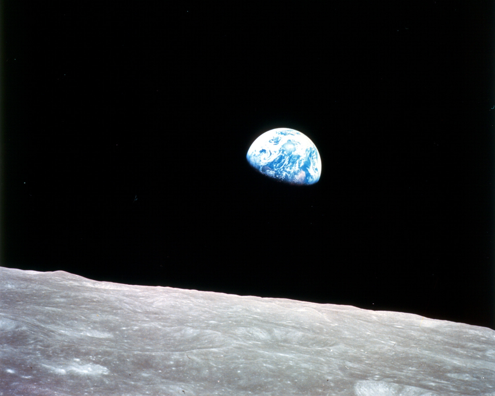

In 1970, Ernst Stuhlinger, then Associate Director for Science at the Marshall Space Flight Center, responded to a letter from Sister Mary Jucunda in Zambia, Africa asking why so much money were spent on space programs when children were dying of hunger. In 2025, as research funding from the federal government faces unprecedented cuts, Ernst’s letter is a reminder of why a long-term view on scientific discovery is critical for human progress. His letter is reproduced here.
Dear Sister Mary Jucunda:
Your letter was one of many which are reaching me every day, but it has touched me more deeply than all the others because it came so much from the depths of a searching mind and a compassionate heart. I will try to answer your question as best as I possibly can.
First, however, I would like to express my great admiration for you, and for all your many brave sisters, because you are dedicating your lives to the noblest cause of man: help for his fellowmen who are in need.
You asked in your letter how I could suggest the expenditures of billions of dollars for a voyage to Mars, at a time when many children on this Earth are starving to death. I know that you do not expect an answer such as “Oh, I did not know that there are children dying from hunger, but from now on I will desist from any kind of space research until mankind has solved that problem!” In fact, I have known of famined children long before I knew that a voyage to the planet Mars is technically feasible. However, I believe, like many of my friends, that travelling to the Moon and eventually to Mars and to other planets is a venture which we should undertake now, and I even believe that this project, in the long run, will contribute more to the solution of these grave problems we are facing here on Earth than many other potential projects of help which are debated and discussed year after year, and which are so extremely slow in yielding tangible results.
Before trying to describe in more detail how our space program is contributing to the solution of our Earthly problems, I would like to relate briefly a supposedly true story, which may help support the argument. About 400 years ago, there lived a count in a small town in Germany. He was one of the benign counts, and he gave a large part of his income to the poor in his town. This was much appreciated, because poverty was abundant during medieval times, and there were epidemics of the plague which ravaged the country frequently. One day, the count met a strange man. He had a workbench and little laboratory in his house, and he labored hard during the daytime so that he could afford a few hours every evening to work in his laboratory. He ground small lenses from pieces of glass; he mounted the lenses in tubes, and he used these gadgets to look at very small objects. The count was particularly fascinated by the tiny creatures that could be observed with the strong magnification, and which he had never seen before. He invited the man to move with his laboratory to the castle, to become a member of the count’s household, and to devote henceforth all his time to the development and perfection of his optical gadgets as a special employee of the count.
The townspeople, however, became angry when they realized that the count was wasting his money, as they thought, on a stunt without purpose. “We are suffering from this plague,” they said, “while he is paying that man for a useless hobby!” But the count remained firm. “I give you as much as I can afford,” he said, “but I will also support this man and his work, because I know that someday something will come out of it!”
Indeed, something very good came out of this work, and also out of similar work done by others at other places: the microscope. It is well known that the microscope has contributed more than any other invention to the progress of medicine, and that the elimination of the plague and many other contagious diseases from most parts of the world is largely a result of studies which the microscope made possible.
The count, by retaining some of his spending money for research and discovery, contributed far more to the relief of human suffering than he could have contributed by giving all he could possibly spare to his plague-ridden community.
The situation which we are facing today is similar in many respects. The President of the United States is spending about 200 billion dollars in his yearly budget [more than $2 trillion in 2012]. This money goes to health, education, welfare, urban renewal, highways, transportation, foreign aid, defense, conservation, science, agriculture and many installations inside and outside the country. About 1.6 percent of this national budget was allocated to space exploration this year [less than .5 of one percent in 2012]. The space program includes Project Apollo, and many other smaller projects in space physics, space astronomy, space biology, planetary projects, Earth resources projects, and space engineering. To make this expenditure for the space program possible, the average American taxpayer with 10,000 dollars income per year is paying about 30 tax dollars for space. The rest of his income, 9,970 dollars, remains for his subsistence, his recreation, his savings, his other taxes, and all his other expenditures.
You will probably ask now: “Why don’t you take 5 or 3 or 1 dollar out of the 30 space dollars which the average American taxpayer is paying, and send these dollars to the hungry children?” To answer this question, I have to explain briefly how the economy of this country works. The situation is very similar in other countries. The government consists of a number of departments (Interior, Justice, Health, Education and Welfare, Transportation, Defense, and others) and the bureaus (National Science Foundation, National Aeronautics and Space Administration, and others). All of them prepare their yearly budgets according to their assigned missions, and each of them must defend its budget against extremely severe screening by congressional committees, and against heavy pressure for economy from the Bureau of the Budget and the President. When the funds are finally appropriated by Congress, they can be spent only for the line items specified and approved in the budget.
The budget of the National Aeronautics and Space Administration, naturally, can contain only items directly related to aeronautics and space. If this budget were not approved by Congress, the funds proposed for it would not be available for something else; they would simply not be levied from the taxpayer, unless one of the other budgets had obtained approval for a specific increase which would then absorb the funds not spent for space. You realize from this brief discourse that support for hungry children, or rather a support in addition to what the United States is already contributing to this very worthy cause in the form of foreign aid, can be obtained only if the appropriate department submits a budget line item for this purpose, and if this line item is then approved by Congress.
You may ask now whether I personally would be in favor of such a move by our government. My answer is an emphatic yes. Indeed, I would not mind at all if my annual taxes were increased by a number of dollars for the purpose of feeding hungry children, wherever they may live.
I know that all of my friends feel the same way. However, we could not bring such a program to life merely by desisting from making plans for voyages to Mars. On the contrary, I even believe that by working for the space program I can make some contribution to the relief and eventual solution of such grave problems as poverty and hunger on Earth. Basic to the hunger problem are two functions: the production of food and the distribution of food. Food production by agriculture, cattle ranching, ocean fishing and other large-scale operations is efficient in some parts of the world, but drastically deficient in many others. For example, large areas of land could be utilized far better if efficient methods of watershed control, fertilizer use, weather forecasting, fertility assessment, plantation programming, field selection, planting habits, timing of cultivation, crop survey and harvest planning were applied.
The best tool for the improvement of all these functions, undoubtedly, is the artificial Earth satellite. Circling the globe at a high altitude, it can screen wide areas of land within a short time; it can observe and measure a large variety of factors indicating the status and condition of crops, soil, droughts, rainfall, snow cover, etc., and it can radio this information to ground stations for appropriate use. It has been estimated that even a modest system of Earth satellites equipped with Earth resources, sensors, working within a program for worldwide agricultural improvements, will increase the yearly crops by an equivalent of many billions of dollars.
The distribution of the food to the needy is a completely different problem. The question is not so much one of shipping volume, it is one of international cooperation. The ruler of a small nation may feel very uneasy about the prospect of having large quantities of food shipped into his country by a large nation, simply because he fears that along with the food there may also be an import of influence and foreign power. Efficient relief from hunger, I am afraid, will not come before the boundaries between nations have become less divisive than they are today. I do not believe that space flight will accomplish this miracle over night. However, the space program is certainly among the most promising and powerful agents working in this direction.
Let me only remind you of the recent near-tragedy of Apollo 13. When the time of the crucial reentry of the astronauts approached, the Soviet Union discontinued all Russian radio transmissions in the frequency bands used by the Apollo Project in order to avoid any possible interference, and Russian ships stationed themselves in the Pacific and the Atlantic Oceans in case an emergency rescue would become necessary. Had the astronaut capsule touched down near a Russian ship, the Russians would undoubtedly have expended as much care and effort in their rescue as if Russian cosmonauts had returned from a space trip. If Russian space travelers should ever be in a similar emergency situation, Americans would do the same without any doubt.
Higher food production through survey and assessment from orbit, and better food distribution through improved international relations, are only two examples of how profoundly the space program will impact life on Earth. I would like to quote two other examples: stimulation of technological development, and generation of scientific knowledge.
The requirements for high precision and for extreme reliability which must be imposed upon the components of a moon-travelling spacecraft are entirely unprecedented in the history of engineering. The development of systems which meet these severe requirements has provided us a unique opportunity to find new material and methods, to invent better technical systems, to manufacturing procedures, to lengthen the lifetimes of instruments, and even to discover new laws of nature.
All this newly acquired technical knowledge is also available for application to Earth-bound technologies. Every year, about a thousand technical innovations generated in the space program find their ways into our Earthly technology where they lead to better kitchen appliances and farm equipment, better sewing machines and radios, better ships and airplanes, better weather forecasting and storm warning, better communications, better medical instruments, better utensils and tools for everyday life. Presumably, you will ask now why we must develop first a life support system for our moon-travelling astronauts, before we can build a remote-reading sensor system for heart patients. The answer is simple: significant progress in the solutions of technical problems is frequently made not by a direct approach, but by first setting a goal of high challenge which offers a strong motivation for innovative work, which fires the imagination and spurs men to expend their best efforts, and which acts as a catalyst by including chains of other reactions.
Spaceflight without any doubt is playing exactly this role. The voyage to Mars will certainly not be a direct source of food for the hungry. However, it will lead to so many new technologies and capabilities that the spin-offs from this project alone will be worth many times the cost of its implementation.
Besides the need for new technologies, there is a continuing great need for new basic knowledge in the sciences if we wish to improve the conditions of human life on Earth. We need more knowledge in physics and chemistry, in biology and physiology, and very particularly in medicine to cope with all these problems which threaten man’s life: hunger, disease, contamination of food and water, pollution of the environment.
We need more young men and women who choose science as a career and we need better support for those scientists who have the talent and the determination to engage in fruitful research work. Challenging research objectives must be available, and sufficient support for research projects must be provided. Again, the space program with its wonderful opportunities to engage in truly magnificent research studies of moons and planets, of physics and astronomy, of biology and medicine is an almost ideal catalyst which induces the reaction between the motivation for scientific work, opportunities to observe exciting phenomena of nature, and material support needed to carry out the research effort.
Among all the activities which are directed, controlled, and funded by the American government, the space program is certainly the most visible and probably the most debated activity, although it consumes only 1.6 percent of the total national budget, and 3 per mille (less than one-third of 1 percent) of the gross national product. As a stimulant and catalyst for the development of new technologies, and for research in the basic sciences, it is unparalleled by any other activity. In this respect, we may even say that the space program is taking over a function which for three or four thousand years has been the sad prerogative of wars.
How much human suffering can be avoided if nations, instead of competing with their bomb-dropping fleets of airplanes and rockets, compete with their moon-travelling space ships! This competition is full of promise for brilliant victories, but it leaves no room for the bitter fate of the vanquished, which breeds nothing but revenge and new wars.
Although our space program seems to lead us away from our Earth and out toward the moon, the sun, the planets, and the stars, I believe that none of these celestial objects will find as much attention and study by space scientists as our Earth. It will become a better Earth, not only because of all the new technological and scientific knowledge which we will apply to the betterment of life, but also because we are developing a far deeper appreciation of our Earth, of life, and of man.

“Earthrise,” one of the most powerful and iconic images from the Apollo program, was taken in December 1968 during the Apollo 8 mission. This view of the rising Earth greeted the Apollo 8 astronauts as they came from behind the Moon after the first lunar orbit. Used as a symbol of the planet’s fragility, it juxtaposes the grey, lifeless Moon in the foreground with the blue and white Earth teeming with life hanging in the blackness of space.
The photograph which I enclose with this letter shows a view of our Earth as seen from Apollo 8 when it orbited the moon at Christmas, 1968. Of all the many wonderful results of the space program so far, this picture may be the most important one. It opened our eyes to the fact that our Earth is a beautiful and most precious island in an unlimited void, and that there is no other place for us to live but the thin surface layer of our planet, bordered by the bleak nothingness of space. Never before did so many people recognize how limited our Earth really is, and how perilous it would be to tamper with its ecological balance. Ever since this picture was first published, voices have become louder and louder warning of the grave problems that confront man in our times: pollution, hunger, poverty, urban living, food production, water control, overpopulation. It is certainly not by accident that we begin to see the tremendous tasks waiting for us at a time when the young space age has provided us the first good look at our own planet.
Very fortunately though, the space age not only holds out a mirror in which we can see ourselves, it also provides us with the technologies, the challenge, the motivation, and even with the optimism to attack these tasks with confidence. What we learn in our space program, I believe, is fully supporting what Albert Schweitzer had in mind when he said: “I am looking at the future with concern, but with good hope.”
My very best wishes will always be with you, and with your children.
Very sincerely yours,
Ernst Stuhlinger
Associate Director for Science